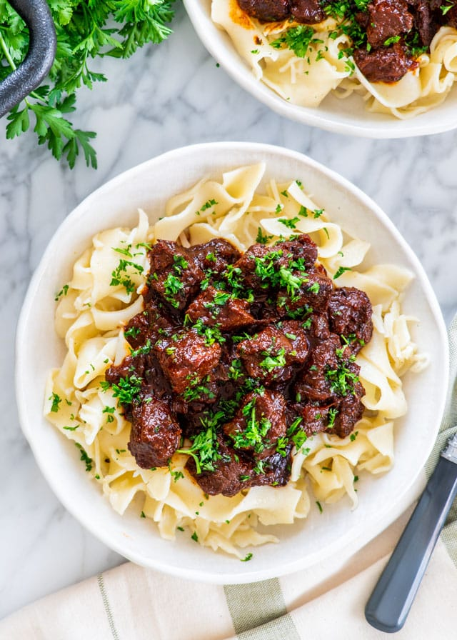

Hungarian Goulash

Description
A rich stew flavored with sweet paprika, plenty of fresh garlic,
caraway seeds, and tender beef. Served over noodles,
potato, or spaetzle (German egg noodle), this recipe will
warm you from the inside out.
Ingredients
- Olive oil
- Stewing beef
- Salt & pepper
- Onion
- Garlic
- Paprika
- Carraway seeds
- Oregano
- Brown sugar
- Tomato sauce
- Balsamic vinegar
- Beef broth
- Parsley
Directions
- Brown the meat – In a large skillet or dutch oven, heat the olive oil over high heat. When the oil is hot add the beef, season with salt and pepper and continue to sear till the meat begins to brown. We want the liquid that the beef releases as it cooks to evaporate off so be sure to keep the heat on high.
- Incorporate your flavors – Add the onions and garlic to the dish and cook till the onions begin to soften and go translucent, be sure that your garlic doesn’t burn in this time, it shouldn’t though because there should be enough moisture in the pot. If need be, add the garlic right when the onions are soft. Add the paprika, oregano, bay leaves, caraway seed, and brown sugar, be sure to stir all of these together before allowing to cook for 30 seconds.
- Create the sauce – Add the wet ingredients: the tomato sauce, balsamic vinegar, and beef broth before stirring completely. Bring this entire mixture to a boil before covering and turning down the heat to low, allow this to cook for 2 hours and don’t forget to stir occasionally.
- Serve – Garnish with parsley and serve over noodles or mashed potatoes.